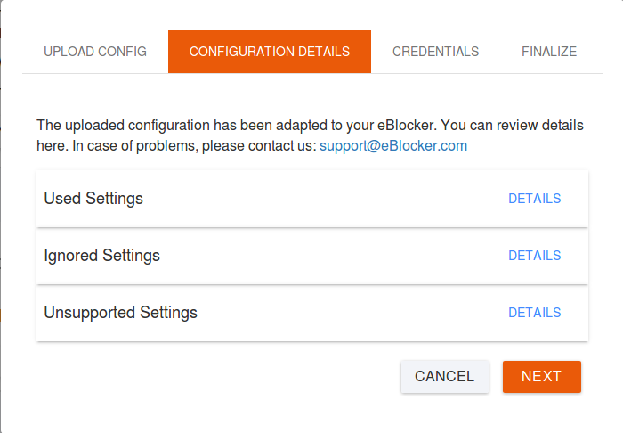
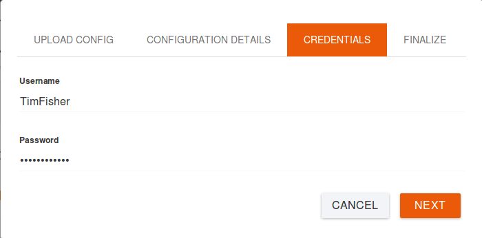
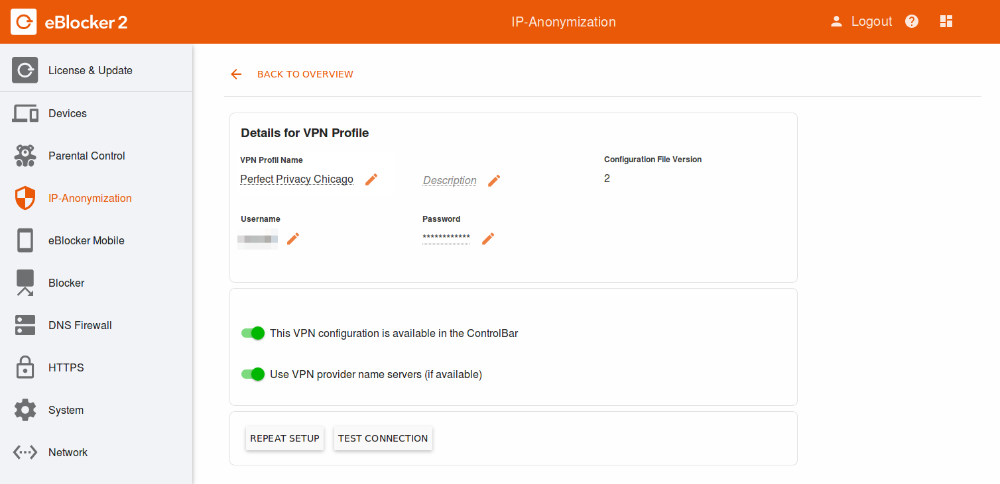
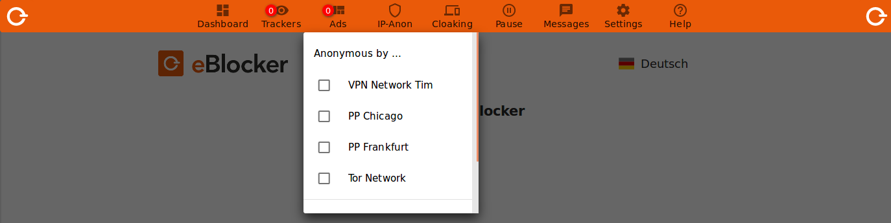
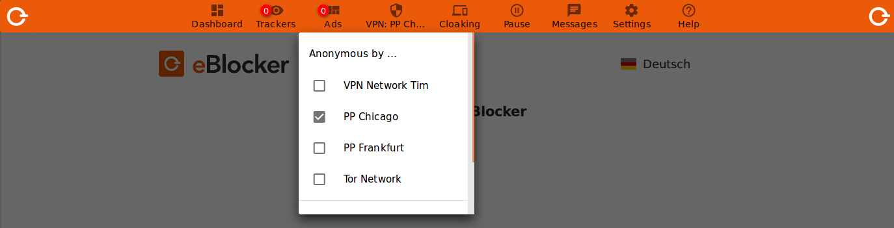

Deutsch | English
Instead of using the Tor network, you can also use a VPN connection via any VPN provider.
Attention:
By using the services of VPN providers, you may incur additional costs. The connection speed may depend on the VPN provider.
Set up a VPN connection in eBlocker Settings > Menu IP Anonymization > Tab "VPN Networks". There you will also find a link to a list of the VPN providers we have tested. We are constantly expanding the list. You can also use other VPN providers as long as they support the OpenVPN protocol and offer the OpenVPN files for download.
Your VPN provider will provide you with a user name, password and a configuration file with the extension".ovpn". This configuration file is required to set up the connection to the VPN network.
To establish a VPN connection, first create a new VPN provider. To do this, click on "New VPN provider". Follow the wizard and upload the configuration file provided by your VPN provider.
After uploading the configuration file, some information is displayed. These are, for example, options ignored or not supported by the eBlocker, which are generally harmless and do not cause any malfunctions. The eBlocker can still be used optimally. Click on "Next".

Under "Access data", enter the user name and password that you have received from your VPN provider. Now click on "Next".

Then enter the name and description for this VPN network and enter the country for the VPN network from which your IP address should emerge. Finally determine whether the VPN network should be available in the Control Bar and click on the slide switch. If the connection is not to be displayed in the Control Bar, it is only displayed as inactive in your settings.

You have now successfully created a new VPN network and can now edit or remove it with a click on the name or perform a connection test.

On the eBlocker Dashboard you will find an "Anonymization" card. If the card should not be visible, please add this card to the Dashboard.
Select your VPN connection under "Select a network" and click on the "Connect" button.

The eBlocker now establishes the connection to the VPN server and will show you the successful connection. The connection to the VPN server can be disconnected just as easily. Click on the link "Disconnect" in the "Anonymisation" card.
In the eBlocker Control Bar under the menu item "IP-Anon" you can see also the VPN network you have just created. To connect your computer to the Internet via a specific VPN service, two clicks in the control bar are enough.

After selection a status window appears in which you can follow the connection setup.
After activating the VPN network, the anon symbol is additionally filled in with a check pattern in the control bar to signal that the anon function is active.

To disconnect the VPN connection again, first click on the IP-Anon icon and then on the VPN network. The IP-Anon symbol in the control bar again shows an unfilled check pattern.
Attention:
A gate pre-connection cannot be used at the same time as an existing VPN or other existing gate connection.
Please also note our FAQ's.